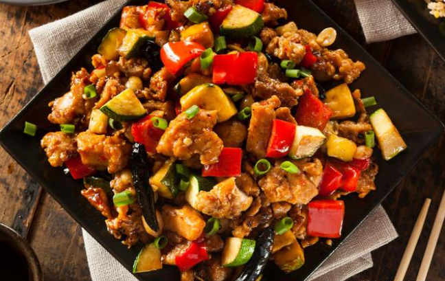
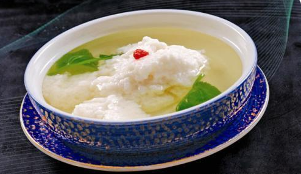

一说起成都这座城市的美食，很多人的第一想法就是关于“辣”的味觉效果。但是被称为天府之国的成都还有着另一面的饮食习惯。今天就带你走进成都，探索一下成都的其他特色景点美食吧！
麻婆豆腐
说起成都美食，排在第一位的当属麻婆豆腐了！麻婆豆腐是四川省传统名菜之一，属于川菜，此菜成菜麻、辣、鲜、香、烫、脆、嫩、酥，将川菜麻辣味型的特点展现的淋漓尽致。麻婆豆腐始创于清朝同治元年（1862年），在成都万福桥边，有一家原名“陈兴盛饭铺”的店面。店主陈春富（陈森富）早殁，小饭店便由老板娘经营，女老板面上微麻，人称"陈麻婆"。当年的万福桥是一道横跨府河，常有苦力之人在此歇脚、打尖。光顾饭铺的主要是挑油的脚夫。陈氏对烹制豆腐有一套独特的烹饪技巧，烹制出的豆腐色香味俱全，不同凡响，深得人们喜爱，她创制的烧豆腐，则被称为“陈麻婆豆腐”，其饮食小店后来也以“陈麻婆豆腐店”为名。
醪糟烧肉
醪糟烧肉，已属少见，参汤烹制更显尊贵，肉色红亮，入口化渣，味醇汁浓，醪香浓郁，有肉之丰腴而无肉之肥腻。此菜色香味形俱佳，风味独特，为川菜红烧肉之一绝，五花肉富含蛋白质、脂肪，且蛋白质是完全蛋白质，它的氨基酸组成与人体氨基酸组成基本相同，故容易被人体消化吸收。加之成菜的特殊工序，使脂肪大量糖化，更容易被人体吸收。
冒菜
冒菜是成都的特色，就是用中药和各种调料配出的汤汁烫熟的菜；把菜用一个竹勺装好，一般一勺就是一份；在锅里煮熟放到碗里，碗里要提前调好各种佐料，顺便再舀一勺汤汁顾名曰“冒菜”，再撒上点香菜、葱花和四川特有的豆豉，就成了成都最有名最特色的小吃“冒菜”。简单点说“冒菜就是一个人的火锅，火锅就是一群人的冒菜。
宫保鸡丁
宫保鸡丁是一道闻名中外的特色传统名菜。鲁菜、川菜、贵州菜中都有收录，原料、做法有差别。 川菜版的宫保鸡丁用的是鸡脯肉，由于鸡脯肉不容易入味，炒出来鸡肉容易嫩滑不足，需要在码味上浆之前，用刀背将鸡肉拍打几下，或者放入一只蛋白，这样的鸡肉会更加嫩滑。川菜版宫保鸡丁原料中必须使用油酥花生米和干辣椒节，味必须是辣型荔枝味。辣椒节炸香，突出糊辣味。

回锅肉
回锅肉是一种四川传统菜式中家常（味型）菜肴的代表菜肴之一，属于川菜系列。制作原料主要有猪后臀肉、青椒、蒜苗等，口味独特，色泽红亮，肥而不腻。回锅肉起源四川农村地区，古代时期称作油爆锅，四川地区大部分家庭都会制作。所谓回锅，就是再次烹调的意思。回锅肉在川菜中的地位是非常重要的，回锅肉一直被认为是川菜之首，川菜之化身，提到川菜必然想到回锅肉。
开水白菜
水白菜是一道四川名菜，原系川菜名厨黄敬临在清宫御膳房时创制，后来由川菜大师罗国荣发扬光大，成为国宴上的一道精品。开水白菜以北方的大白菜心来制作，配以用鸡，鸭，排骨熬煮，并用鸡肉蓉，猪肉蓉澄澈的高汤调味，最后浇汤时在汤里淋一些鸡油。成菜后，清鲜淡雅，香味浓醇，汤味浓厚，不油不腻，却清香爽口。相传，开水白菜是由颇受慈禧赏识的川菜名厨黄敬临在清宫御膳房创制的。黄敬临当厨时，不少人贬损川菜“只会麻辣，粗俗土气”，为了破谣立证，他冥思苦想多时并经由百番尝试，终于开先河地创出了“开水白菜”这道菜中极品，把极繁和极简归至化境，一扫川菜积郁百年的冤屈。 后来，黄敬临将此菜制法带回四川，广为流传。
荣城鸡豆花
鸡豆花是四川地区以鸡肉和火腿为原料的特色传统名菜，至今已有百余年的历史。此菜为四川的看家菜，成菜颇有特色，为川中清淡醇厚的代表菜之一。讲究“吃鸡不见鸡”、“吃肉不见肉”，将荤料制成素形，即人们所谓的“以荤托素”。鸡豆花”色泽雪白，形似豆花，以鸡为料，故名。它一入口，你会感到它嫩如豆花之质，细细品尝，才又感到它的味比豆花更高一筹，而用以冲制“豆花”的汤是一种特制清汤，它也是以鸡为主要原料制成的，这种汤味极鲜美，清澈见底，汤中无一物。正所谓“吃鸡不见鸡，不似鸡肉，恰似鸡肉，胜似鸡肉。

甜烧白
甜烧白是一道四川的传统名菜，属于川菜。主要食材是五花肉，糯米，豆沙。将豆沙夹入肉片蒸至酥软作甜食上桌。菜肴名称取名独特，吃起来鲜香甜糯、丰腴形美，色泽红亮，咸鲜味浓，耙软适度，肥而不腻。口感俱佳，深受当地民众喜爱。